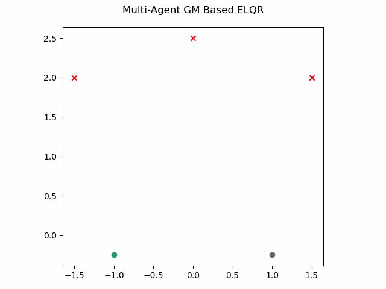
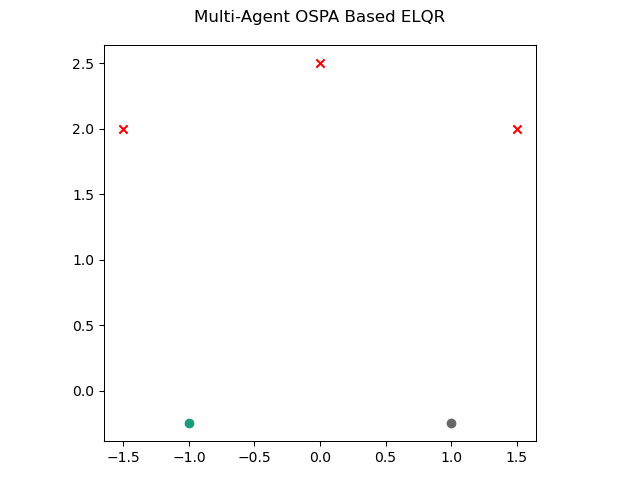
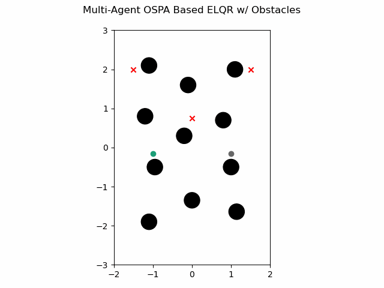

ELQR Examples
Gaussian Mixture Based
The multi-agent ELQR algorithm can be run for a finite horizon with non-linear dynamics and a use a Gaussian Mixture agent and target density with the following. This leverages the single agent ELQR formulation from GNCPy.
1def modify_quadratize():
2 import numpy as np
3
4 import serums.models as smodels
5 import gncpy.control as gcontrol
6 from gncpy.dynamics.basic import IRobotCreate
7 from carbs.guidance import ELQR
8
9 d2r = np.pi / 180
10
11 tt = 0 # starting time when calculating control
12 dt = 0.01
13 time_horizon = 90 * dt # run for 90 timesteps
14
15 # define starting and ending state for control calculation
16 end_states = [
17 np.array([1.5, 2, 90 * d2r]).reshape((3, 1)),
18 np.array([0, 2.5, 90 * d2r]).reshape((3, 1)),
19 np.array([-1.5, 2, 90 * d2r]).reshape((3, 1)),
20 ]
21 start_dist = smodels.GaussianMixture()
22 start_dist.add_components(
23 np.array([-1, -0.25, 90 * d2r]).reshape((-1, 1)),
24 np.diag([0.25, 0.25, 1 * d2r]),
25 0.5,
26 )
27 start_dist.add_components(
28 np.array([1, -0.25, 90 * d2r]).reshape((-1, 1)),
29 np.diag([0.25, 0.25, 1 * d2r]),
30 0.5,
31 )
32
33 # define nominal control input
34 u_nom = np.zeros((2, 1))
35
36 # define dynamics
37 # IRobot Create has a dt that can be set here or it can be set by the control
38 # algorithm
39 dynObj = IRobotCreate(wheel_separation=0.258, radius=0.335 / 2.0)
40
41 # define Q and R weights for using standard cost function
42 Q = np.diag([1500, 1000, 1000])
43 R = 0.5 * np.eye(u_nom.size)
44
45 # define modifications for quadratizing the cost function
46 def quad_modifier(itr, tt, P, Q, R, q, r):
47 rot_cost = 0.4
48 # only modify if within the first 4 iterations
49 if itr < 4:
50 Q[-1, -1] = rot_cost
51 q[-1] = -rot_cost * np.pi / 2
52
53 return P, Q, R, q, r
54
55 # create control obect
56 singleELQR = gcontrol.ELQR(time_horizon=time_horizon)
57 singleELQR.set_state_model(u_nom, dynObj=dynObj)
58 singleELQR.dt = dt # set here or within the dynamic object
59 singleELQR.set_cost_model(Q=Q, R=R)
60
61 # create guidance object
62 safety_factor = 4
63 y_ref = 0.9
64
65 elqr = ELQR()
66 elqr.set_control_model(singleELQR)
67 elqr.set_cost_model(
68 quad_modifier=quad_modifier,
69 safety_factor=safety_factor,
70 y_ref=y_ref,
71 )
72
73 # convert end locations into a distribution or "wayareas"
74 end_dist = elqr.targets_to_wayareas(end_states)
75
76 # calculate guidance
77 (
78 state_trajectories,
79 costs,
80 control_signals,
81 fig,
82 frame_list,
83 ) = elqr.plan(
84 tt,
85 start_dist,
86 end_dist,
87 provide_details=True,
88 show_animation=True,
89 save_animation=True,
90 plt_inds=[0, 1],
91 ttl="Multi-Agent GM Based ELQR",
92 )
93
94 return frame_list
which gives this as output.
Optimal Sub-Pattern Assignment Based
The multi-agent ELQR algorithm can be run for a finite horizon with non-linear dynamics and a use an OSPA based non-quadratic cost with the following. This leverages the single agent ELQR formulation from GNCPy.
1def elqr_ospa():
2 import numpy as np
3
4 import serums.models as smodels
5 import gncpy.control as gcontrol
6 from gncpy.dynamics.basic import IRobotCreate
7 from carbs.guidance import ELQROSPA
8 from serums.distances import SingleObjectDistance
9
10 d2r = np.pi / 180
11
12 tt = 0 # starting time when calculating control
13 dt = 0.01
14 time_horizon = 90 * dt # run for 90 timesteps
15
16 # define starting and ending state for control calculation
17 end_states = np.array([[1.5, 2, 90 * d2r], [0, 2.5, 90 * d2r], [-1.5, 2, 90 * d2r]])
18 start_states = np.array([[-1, -0.25, 90 * d2r], [1, -0.25, 90 * d2r]])
19
20 # define nominal control input
21 u_nom = np.zeros((2, 1))
22
23 # define dynamics
24 # IRobot Create has a dt that can be set here or it can be set by the control
25 # algorithm
26 dynObj = IRobotCreate(wheel_separation=0.258, radius=0.335 / 2.0)
27
28 # define Q and R weights for using standard cost function
29 Q = np.diag([1500, 1000, 1000])
30 R = 0.5 * np.eye(u_nom.size)
31
32 # define modifications for quadratizing the cost function
33 def quad_modifier(itr, tt, P, Q, R, q, r):
34 rot_cost = 0.4
35 # only modify if within the first 4 iterations
36 if itr < 4:
37 Q[-1, -1] = rot_cost
38 q[-1] = -rot_cost * np.pi / 2
39
40 return P, Q, R, q, r
41
42 # create control obect
43 singleELQR = gcontrol.ELQR(time_horizon=time_horizon)
44 singleELQR.set_state_model(u_nom, dynObj=dynObj)
45 singleELQR.dt = dt # set here or within the dynamic object
46 singleELQR.set_cost_model(Q=Q, R=R)
47
48 # create guidance object
49 pos_inds = [0, 1]
50 cutoff = 10
51
52 elqr = ELQROSPA()
53 elqr.set_control_model(singleELQR)
54 elqr.set_cost_model(
55 quad_modifier=quad_modifier,
56 ospa_inds=pos_inds,
57 ospa_cutoff=cutoff,
58 ospa_method=SingleObjectDistance.EUCLIDEAN,
59 )
60
61 # calculate guidance
62 (
63 state_trajectories,
64 costs,
65 control_signals,
66 fig,
67 frame_list,
68 ) = elqr.plan(
69 tt,
70 start_states,
71 end_states,
72 provide_details=True,
73 show_animation=True,
74 save_animation=True,
75 plt_inds=pos_inds,
76 ttl="Multi-Agent OSPA Based ELQR",
77 )
78
79 return frame_list
which gives this as output.
OSPA Based with Obstacles
The multi-agent ELQR algorithm can be run for a finite horizon with non-linear dynamics and a use an OSPA based non-quadratic cost plus an additional cost to avoid obstacles with the following. This leverages the single agent ELQR formulation from GNCPy.
1def elqr_ospa_obstacles():
2 import matplotlib.pyplot as plt
3 import numpy as np
4 from matplotlib.patches import Circle
5
6 import gncpy.control as gcontrol
7 import gncpy.plotting as gplot
8 from gncpy.dynamics.basic import IRobotCreate
9 from carbs.guidance import ELQROSPA
10 from serums.distances import SingleObjectDistance
11
12 d2r = np.pi / 180
13
14 tt = 0 # starting time when calculating control
15 dt = 0.01
16 time_horizon = 150 * dt # run for 120 timesteps
17
18 # define starting and ending state for control calculation
19 end_states = np.array(
20 [[1.5, 2, 90 * d2r], [0, 0.75, 90 * d2r], [-1.5, 2, 90 * d2r]]
21 )
22 start_states = np.array([[-1, -0.15, 90 * d2r], [1, -0.15, 90 * d2r]])
23
24 # define nominal control input
25 u_nom = np.zeros((2, 1))
26
27 # define dynamics
28 # IRobot Create has a dt that can be set here or it can be set by the control
29 # algorithm
30 dynObj = IRobotCreate(wheel_separation=0.258, radius=0.335 / 2.0)
31
32 # define Q and R weights for using standard cost function
33 Q = np.diag([1500, 1000, 1000])
34 R = 0.4 * np.eye(u_nom.size)
35
36 # define modifications for quadratizing the cost function
37 def quad_modifier(itr, tt, P, Q, R, q, r):
38 rot_cost = 0.4
39 # only modify if within the first 2 iterations
40 if itr < 2:
41 Q[-1, -1] = rot_cost
42 q[-1] = -rot_cost * np.pi / 2
43
44 return P, Q, R, q, r
45
46 # create control obect
47 singleELQR = gcontrol.ELQR(time_horizon=time_horizon)
48 singleELQR.set_state_model(u_nom, dynObj=dynObj)
49 singleELQR.dt = dt # set here or within the dynamic object
50 singleELQR.set_cost_model(Q=Q, R=R) # can also set the quad modifier here
51
52 # define some circular obstacles with center pos and radius (x, y, radius)
53 obstacles = np.array(
54 [
55 [0, -1.35, 0.2],
56 [1.0, -0.5, 0.2],
57 [-0.95, -0.5, 0.2],
58 [-0.2, 0.3, 0.2],
59 [0.8, 0.7, 0.2],
60 [1.1, 2.0, 0.2],
61 [-1.2, 0.8, 0.2],
62 [-1.1, 2.1, 0.2],
63 [-0.1, 1.6, 0.2],
64 [-1.1, -1.9, 0.2],
65 [(10 + np.sqrt(2)) / 10, (-15 - np.sqrt(2)) / 10, 0.2],
66 ]
67 )
68
69 # define enviornment bounds for the robot
70 bottom_left = np.array([-2, -3])
71 top_right = np.array([2, 3])
72
73 # define additional non-quadratic cost
74 obs_factor = 1
75 scale_factor = 1
76 cost_args = (obstacles, obs_factor, scale_factor, bottom_left, top_right)
77
78 def non_quadratic_cost(
79 tt,
80 state,
81 ctrl_input,
82 end_state,
83 is_initial,
84 is_final,
85 _obstacles,
86 _obs_factor,
87 _scale_factor,
88 _bottom_left,
89 _top_right,
90 ):
91 cost = 0
92 # cost for obstacles
93 for obs in _obstacles:
94 diff = state.ravel()[0:2] - obs[0:2]
95 dist = np.sqrt(np.sum(diff * diff))
96 # signed distance is negative if the robot is within the obstacle
97 signed_dist = (dist - dynObj.radius) - obs[2]
98 if signed_dist > 0:
99 continue
100 cost += _obs_factor * np.exp(-_scale_factor * signed_dist).item()
101
102 # add cost for going out of bounds
103 for ii, b in enumerate(_bottom_left):
104 dist = (state[ii] - b) - dynObj.radius
105 cost += _obs_factor * np.exp(-_scale_factor * dist).item()
106
107 for ii, b in enumerate(_top_right):
108 dist = (b - state[ii]) - dynObj.radius
109 cost += _obs_factor * np.exp(-_scale_factor * dist).item()
110
111 return cost
112
113 # create guidance object
114 pos_inds = [0, 1]
115 cutoff = 10
116
117 elqr = ELQROSPA()
118 elqr.set_control_model(singleELQR)
119 elqr.set_cost_model(
120 quad_modifier=quad_modifier,
121 ospa_inds=pos_inds,
122 ospa_cutoff=cutoff,
123 ospa_method=SingleObjectDistance.EUCLIDEAN,
124 non_quad_fun=non_quadratic_cost,
125 non_quad_weight=10,
126 )
127
128 # create figure with obstacles to plot animation on
129 cmap = gplot.get_cmap(start_states.shape[0])
130 fig = plt.figure()
131 fig.add_subplot(1, 1, 1)
132 fig.axes[0].set_aspect("equal", adjustable="box")
133 fig.axes[0].set_xlim((bottom_left[0], top_right[0]))
134 fig.axes[0].set_ylim((bottom_left[1], top_right[1]))
135 for c_ind, start_state in enumerate(start_states):
136 fig.axes[0].scatter(
137 start_state[pos_inds[0]],
138 start_state[pos_inds[1]],
139 marker="o",
140 color=cmap(c_ind),
141 zorder=1000,
142 )
143 for obs in obstacles:
144 c = Circle(obs[:2], radius=obs[2], color="k", zorder=1000)
145 fig.axes[0].add_patch(c)
146 plt_opts = gplot.init_plotting_opts(f_hndl=fig)
147 gplot.set_title_label(
148 fig, 0, plt_opts, ttl="Multi-Agent OSPA Based ELQR w/ Obstacles"
149 )
150
151 # calculate guidance
152 (
153 state_trajectories,
154 costs,
155 control_signals,
156 fig,
157 frame_list,
158 ) = elqr.plan(
159 tt,
160 start_states,
161 end_states,
162 cost_args=cost_args,
163 provide_details=True,
164 show_animation=True,
165 save_animation=True,
166 plt_inds=pos_inds,
167 cmap=cmap,
168 fig=fig,
169 )
170
171 return frame_list
which gives this as output.
